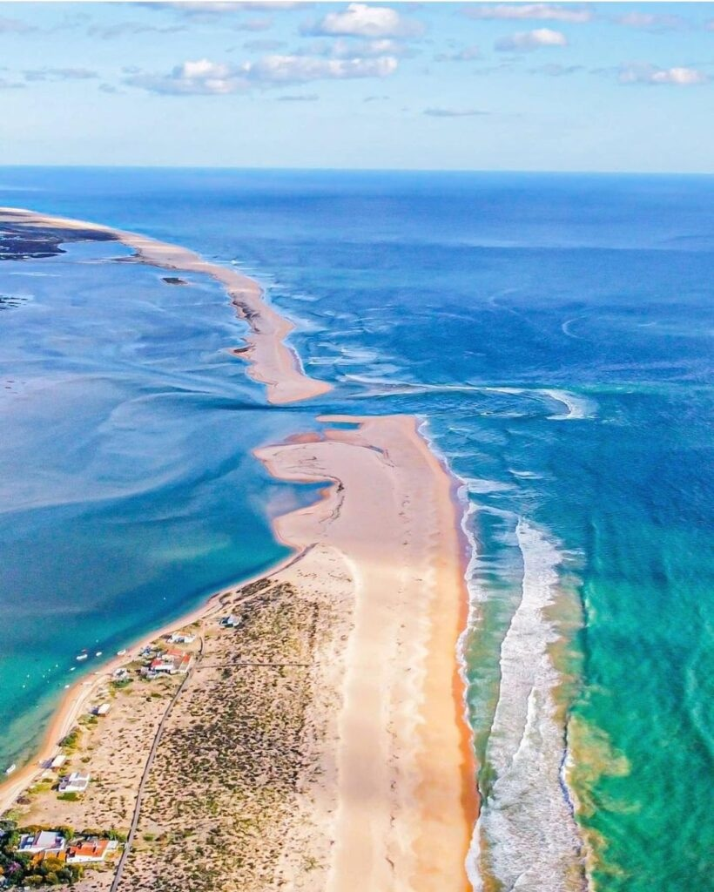
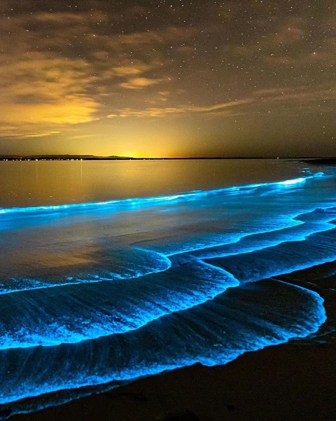

Park near the Ria Formosa access road, cross the footbridge and follow the beach to Barrinha — under an hour on foot. There you wait for the tide and swim across the channel to Ilha Deserta, then swim back. The channel crossing must happen when the tide is at its lowest — that's when the water is shallowest, slowest and safest. Time it for after dark and the channel glows with bioluminescence. 🌊✨
Each card below is one upcoming evening. The chart is a 12-hour timeline centred on sunset (the background fades day → night in the hour around it). The two lines are air temperature and wind, coloured by intensity; the markers show ☀ sunset, the 🌊 nearest low tide and 🌙 moonrise. Water temperature sits beside the plot. The 1–5★ rating rewards a low tide close to sunset, warm air and water, calm wind, and a moonrise near sunset — the makings of a good crossing.